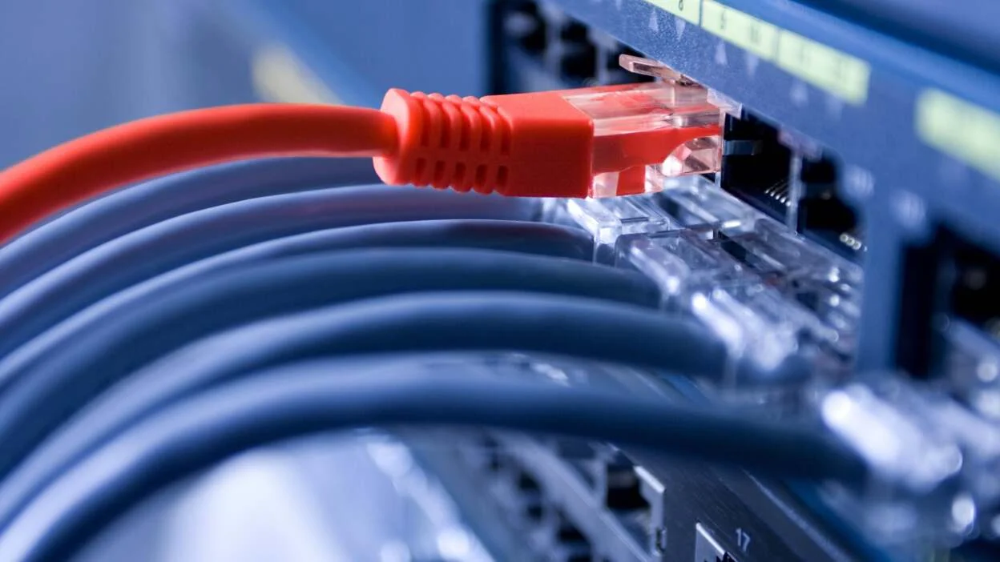
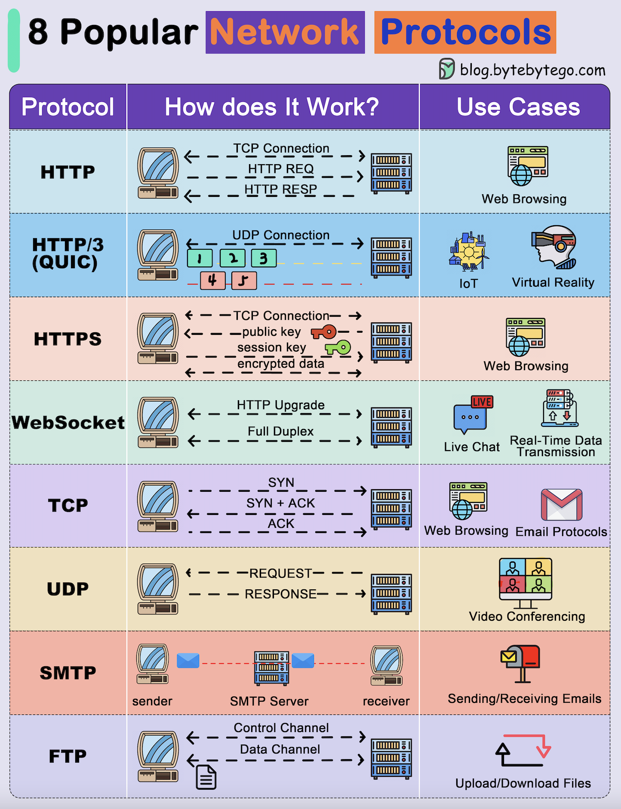

The Internet is the global system of interconnected computer networks that uses the Internet protocol suite TCP/IP to communicate between networks and devices. It is a network of networks–that comprises private, public, academic, business, and government networks of local to global scope–linked by electronic, wireless, and optical networking technologies.
The Internet carries a vast range of information services and resources, such as the interlinked hypertext documents and applications of the World Wide Web (WWW), electronic mail, discussion groups, internet telephony, streaming media and file sharing.
Unlike technologies such as the phonograph or the safety pin, the internet has no single “inventor.” Instead, it has evolved over time. The internet got its start in the United States in the late 1960s as a military defense system in the Cold War. For years, scientists and researchers used it to communicate and share data with one another. Today, we use the internet for almost everything, and for many people it would be impossible to imagine life without it.
During the peak time of the Cold War, Scientists and military experts were especially concerned about what might happen in the event of a Soviet attack on the nation’s telephone system. That is, just one missile could destroy the whole network of lines and wires that made efficient long-distance communication possible.
Therefore, it lead to the birth of the first version of Internet, that is called “ARPANET”. Later, when the ARPANET evolved into the modern Internet by adding more networks and additional protocols, it became a global network that connects millions of devices and users.
It stands for the Advanced Research Projects Agency Network. The network went live in 1969, with the first historic message sent (“node-to-node”) on October 29, 1969, from UCLA to the Stanford Research Institute (SRI); although the previous simple message ”LOGIN” failed to send.
The ARPANET was the only connection between four computing devices at the end of the 1960s, but the network then grew steadily during the 1970s.
Therefore, in order to solve the problem, by the mid-1970s, a computer scientist named Vinton Cerf had developed a way for all of the computers on all of the world’s mini-networks to communicate with one another. He called his invention “Transmission Control Protocol,” or TCP.
Later, he added an additional protocol, known as “Internet Protocol.” The acronym we use to refer to these today is TCP/IP. One writer describes Cerf’s protocol as “the ‘handshake’ that introduces distant and different computers to each other in a virtual space.”
As a result, It became the first wide-area packet-switched network with distributed control and one of the first computer networks to implement the TCP/IP protocol suite. Both technologies became the technical foundation of the Internet.
In order to connect computing devices together, there are many and special connections between each computing device in the world such as, cable, satellite, cellular, dial-up, Integrated Service Digital Network (ISDN), etc. However, to classify them, they are separated into two specific groups—that is wire and wireless connection. Furthermore, they have different in how long it will take to send and receive the message. In other words, each connection have different bandwidth, bit rate, and latency,

A protocol is a set of rules for formatting and processing data. Network protocols are like a common language for computers. The computers within a network may use vastly different software and hardware; however, the use of protocols enables them to communicate with each other regardless.
Standardized protocols are like a common language that computers can use, similar to how two people from different parts of the world may not understand each other's native languages, but they can communicate using a shared third language. If one computer uses the Internet Protocol (IP) and a second computer does as well, they will be able to communicate — just as the United Nations relies on its 6 official languages to communicate amongst representatives from all over the globe. But if one computer uses IP and the other does not know this protocol, they will be unable to communicate.
On the Internet, there are different protocols for different types of processes. Protocols are often discussed in terms of which OSI model layer they belong to. For instance, there are some common protocols:

For more information, access the GeeksforGeeks website.
This pages was created by Man Ly ©2026